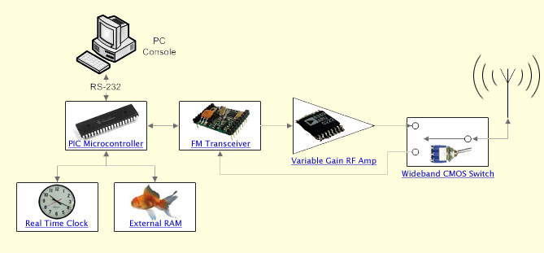

The some-thing's connected to the some-thing...
The hardware platform is based on the Microchip PIC18C452 microcontroller. An FM Transceiver and a Variable Gain RF Amplifier provide programmable output power, which is required for the Power Aware Routing Optimisations (PARO) developed by Steven Sloots in 2004. External RAM is required to cache Dynamic Source Routing (DSR) routing information. A real time clock is required to accurately time long sleep intervals.
Please click on each component in the following block diagram to learn about it:

|
| In case clicking on the diagram doesn't work: |
| PIC Microcontroller | Real Time Clock | External RAM | FM Transceiver | Variable Gain RF Amp | Wideband CMOS Switch |